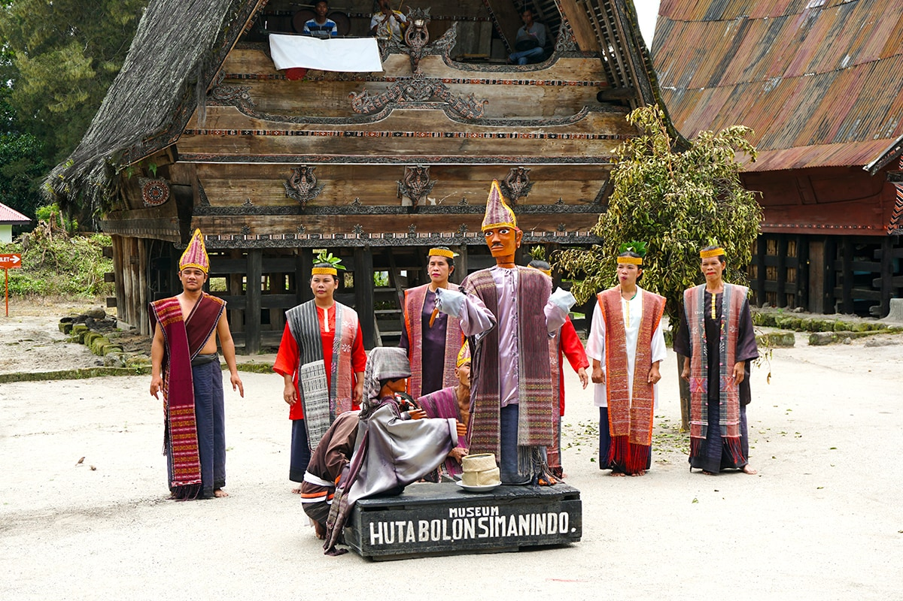
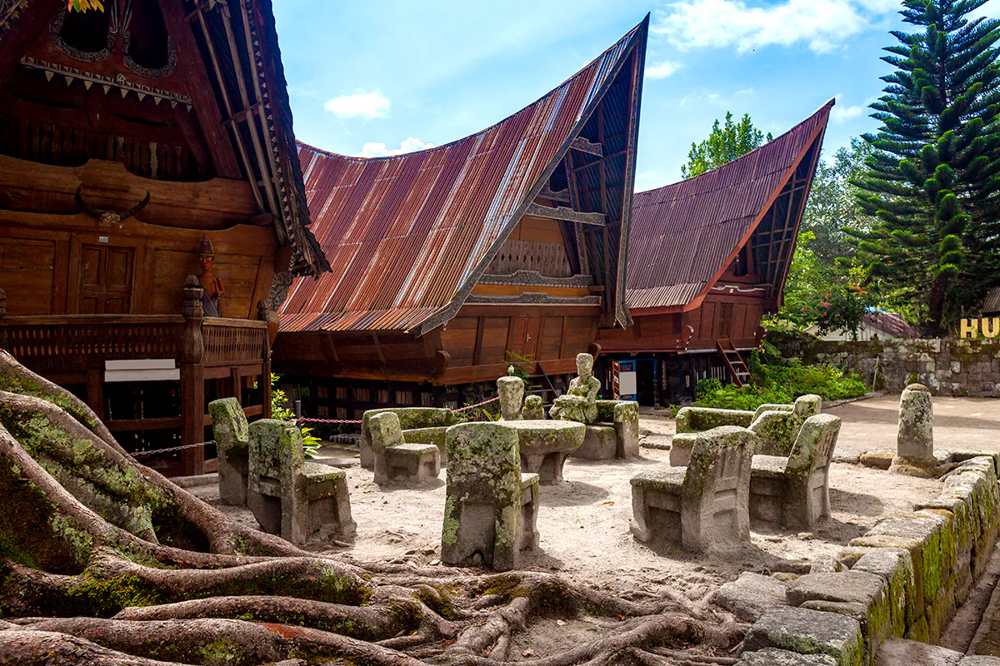

Lake Toba
A Spectacular Indonesia Lake
Lake Toba is an extraordinary natural wonder of the world. This enormous crater lake consists of an island almost the size of Singapore in its center. At over 1,145 square km, and a depth of 450 meters, Lake Toba is actually more like an ocean. This is the largest lake in Southeast Asia and one of the deepest lakes in the world.

How To Get There
By Air
You can choose between two flight routes to reach Lake Toba. The first route is from
Kualanamu International Airport, Medan, to Sisingamangaraja XII International Airport
(previously known as Silangit International Airport) located in Siborong-borong, North
Tapanuli. From there, you can easily reach Lake Toba by land.
The second option is to take a direct flight to Sisingamangaraja XII International Airport.
Some airlines offer direct flights to Sisingamangaraja XII International Airport from Jakarta
and other major cities. Be sure to check the schedule for the route that suits you best!
By Land
Parapat, the town by Lake Toba, is 176 km away from Medan and can be reached in under 6 hours
by public buses that follow two routes: Medan-Parapat or via Medan-Berastagi.
Travel agents in Medan can also organize a rental car plus a chauffeur for you. If you are
coming overland from the south via Bukittinggi and Tarutung there is a public bus available.

How To Get Around
Feel the wind in your hair and do as the locals do by hiring a motorbike to explore this beautiful part of the world. If you’re on Samosir Island, take the day to explore by taking a drive on the road running around the edge of the island. Although rough and unpaved in places, this road offers some spectacular views of the lake from the highest points on the island. If you’re staying in the popular village of Tuk Tuk on Samosir, the best way to get around is to walk or wander, down the main street at a leisurely pace.
Attraction
There are many ways for you to enjoy Lake Toba’s breathtaking natural wonders. Many people
said that kayaking in Lake Toba is a once-in-a-lifetime-experience. Commonly, there are three
routes that you can explore by paddling the kayak, which is Tongging - Silalahi (12 km - Easy),
Tongging - Samosir (50 km - Medium), and Northern Circle (175 km - Demanding). You can also savor
the cool breeze from around the lake by glamping (glamorous camping) on The Kaldera Nomadic Escape.
Located on Sibisa, Ajibata Sub-district, Toba Samosir Regency, you can immerse yourself in
nature without having to bother with the common hassles of conventional camping. Moreover,
you can also be pampered with its luxurious facilities such as Bohemian-style tents, bubble tents,
eco pods, and also an amphitheater with a capacity of 300 people.
Located on the island of Samosir, the traditional village is protected by surrounding barriers of
earthen ramparts with bamboo fencing and trees. The village also dwells in many unique and
authentic traditional houses, especially from Tomok, which consists of a row of massive
wooden houses with striking saddle-shaped thatch roofs made of sugar palm fiber (called ijuk).
Batak tribe is widely known for its festive culture. Among others, Tor-Tor Dance is considered
to be the most elegant one. This traditional dance is usually performed in celebrations such as
harvest time or a wedding ceremony. However, according to history, Tor-Tor Dance is used in a
ritual to invoke spirit and ‘walk’ them into the stone statues, which erected as a symbol of
the ancestors.
Also, there is a wooden puppet called Sigale-gale, which has become a tourist attraction in Samosir
Island because of the mystical value within the myth and belief surrounding the puppet itself.
The locals believed that Sigale-gale can wail and dance by itself without music. Some also said
that Sigale-gale can only be placed in a coffin. This statue is also commonly used in family
death ceremonies in the Samosir area because Sigale-gale dance is believed by local residents
to deliver the spirit of the deceased to the afterlife.
Those of you who are looking for souvenirs might want to take a look at Ulos, a meticulously
handwoven textile which not only functions as clothing, but also is a significant status symbol,
serves as a precious heirloom, or can be a ceremonial gift during a human’s life cycle from birth
and wedding to death.
There are also authentic wood carvings that you can get in the souvenir shops. Don’t forget to
also buy the delightful Arabica coffee beans called Sumatra Mandheling for all of you
coffee-aficionado.